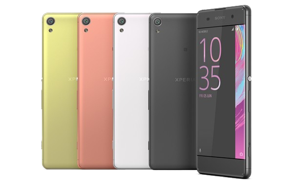

SONY Xperia X
Описание товара
Смартфон на операционной системе Android 6.0, экран 5″,
разрешение 1920×1080, 6-ядерный процессор 1800 МГц, камера 23 Мп,
GPS, ГЛОНАСС
Характеристики товара
| Тип корпуса | моноблок |
| Технология 4G (LTE) | есть |
| Тип SIM-карты | нано-SIM |
| Операционная система | Android 6.0 |
| Дисплей | 5″, IPS |
| Разрешение дисплея | 1920х1080 |
| Процессор | 1800 МГц, 6-ядерный |
| Объем оперативной памяти | 3 Гб |
| Объем встроенной памяти | 32 Гб |
| Максимальный объем карты памяти | 200 Гб |
| Основная камера | 23 Мп |
| Вторая камера | 13 Мп |
| Встроенный модуль GPS | есть |
| Встроенный модуль ГЛОНАСС | есть |
| Емкость аккумулятора | 2620 мАч |
| Размеры (ШхВхТ) | 69.4х142.7х7.9 мм |
| Вес | 153 г |
| Страна производства | Китай |
| Оффициальный сайт | SONY |
Подробное описание товара
Выполненный в нейтральном белом цвете флагманский смартфон SONY Xperia X
отлично подойдет потребителям обоих полов. Представительницы прекрасной
половины человечества по достоинству оценят его современный изысканный
дизайн, мужчинам придется по душе его функциональность и отличные
технические характеристики. Прочный корпус из стекла и металла скрывает
под собой быстрый шестиядерный процессор. Встроенные датчики GPS и ГЛОНАСС
не дадут потеряться даже в незнакомом месте. Емкость аккумулятора Li-Ion
обеспечит долгий срок активного использования телефона даже в режиме
интернет-серфинга. Объем памяти в 32 Гб с возможностью расширения до 200 Гб
позволяет использовать смартфон SONY Xperia X для хранения больших массивов
данных – музыки, фотографий и видео.